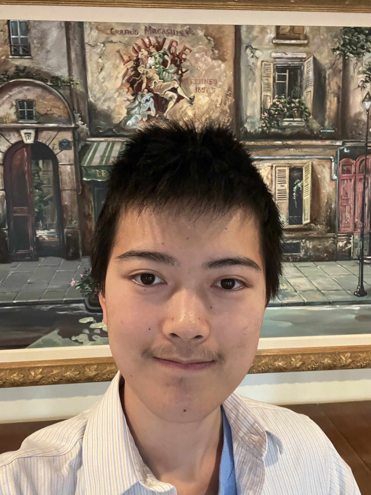

Hanqi Xiao's CV

Education
University of North Carolina at Chapel Hill (UNC) Graduation: May 2026
Computer Science, B.S. Minors in engineering and philosophy. GPA: 3.91
Relevant Courses: Data Structures, System Programming Fundamentals, Foundations of Programming, Data Literacy Laboratory, Linear Algebra, Probability, Logic and Decision Theory, Deep Learning
Technical Skills
Programming: Python (Experienced), mySQL(Basic), Tableau(Basic), HTML(Basic), Java, C
4th place at UNC ACM ICPC competitive programming regionals; Python Certification
Tools: Python data science stack, requests and APIs, Django
Artificial Intelligence: Limited experience in implementation or theory of: Regressions, UNets, CNNs, Transformers, Diffusers. Broad understanding of ML. Still learning.
Main interests: reinforcement learning, agent and environment simulation, genetic/evolution algorithms.
Tools: Pytorch, Sklearn, Tensorflow.
Projects
The Whole Student |Oxford University, UK 2023
Global finalist, global Highly Commended Project award, UNC first place award and audience award through Map the System systems thinking research competition. Invited to Oxford for expenses covered weeklong finals, presented to a global audience.
Poster at the 2023 American Public Health Association conference.
Created computer aided massive literature search and review process.
Identified root causes, assessed system level change and leverage points, engaged in research planning/writing, survey research, and presented to glo abal audiences.
Used python, requests, Scraper API, json, regex.
Connected by AI | UNC-CH Department of Computer Science 2023
Co-wrote the computer vision module of connected-by-ai under Professor Kris Jordan.
Used typescript, openpose, opencv.
EcDNA-Segmentation | Brunk-Lab, RENCI, AI@UNC 2023
Developing model for locating EcDNA in a class imbalanced segmentation task
Used pytorch, tifffile, longleaf
Systems Literature Analysis Engine | Gillings School of Public Health, AI@UNC 2023
Led team of 5 to create systems map verification program in collaboration with Professor Lich (Gillings School of Public Health).
Used transformers (Hugging Face), python, pandas, matplotlib, requests (OpenAI)
Weblang 2.0 | Personal Project, UNC-Chapel Hill 2022--2023
Track winner under the Weblang 2.0 Project [290 participants; Hosted on Devpost]
Language learning tool scraping the internet for “understandable” sentences.
Used python, NLTK, pandas, seaborn, sklearn, requests, selenium, bs4.
Activities
Vice President, Scholastic Artificial Intelligence League (SAILea) 2021--Present
SAILea is a registered non-profit that supports 35 student AI clubs around the world.
Aided founding of 14 clubs.
Hosted speaker events featuring professors and entrepreneurs.
Organized grants and competitions.
Created slides and delivered lessons on deep learning, reinforcement learning, and NLP.
Co-President and Founder, AI@UNC 2023--Present
Co-Lead UNC’s Artificial Intelligence focused student organization; 300+ members.
Contacts and Links
Email: hanqix@unc.edu | Mobile: 984-227-9310
LinkedIn: www.linkedin.com/in/hanqix | Github: https://github.com/The-Inscrutable-X